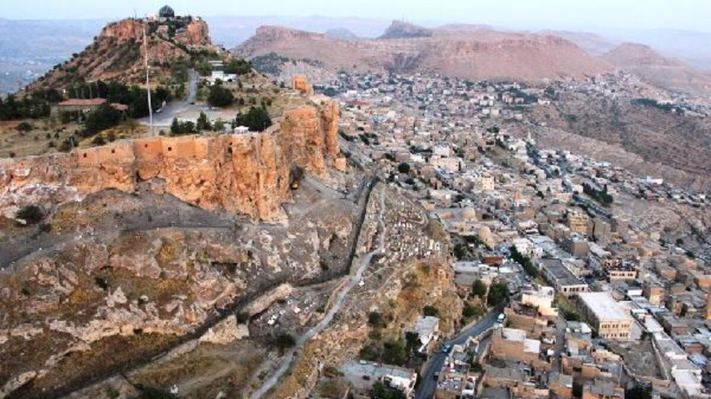

| ANASAYFA | İLETİŞİM | YAPIM | HAKKIMIZDA |
| MARDİN KALESİ/MARDİN |
|  |
Mardin Kalesi Nerede?
Mardin Kalesi Mardin il merkezinde bulunan en önemli tarihi ve kültürel yapılardan biridir. Kara ya da Hava Yolları üzerinden ve bireysel otomobillerle Mardin'e ulaşmak suretiyle rahatlıkla Mardin Kalesine gidilebilir. Özellikle yüksek bir alanda bulunması ile Mardin’i gözler önüne seren eşsiz bir manzarası bulunmaktadır. Tarihi ile beraber gizli bölümlerin olması ve doğallığının günümüze kadar gelmesi açısından önemli bir tarihi kent olarak öne çıkıyor.
Mardin Kalesi Tarihi
Mardin kelimesi geçmişten günümüze kadar pek çok farklı medeniyet tarafından kullanılmış bir yapıdır. Bunlar arasında Pers, Roma, Babil, Asur, Sümer, Mitaniler, Emeviler, Abbasiler, akkoyunlular, Selçuklular, Safeviler ile beraber Osmanlı Devleti'nde yaradan güçlü bir yapıdır. Özellikle ateşe tapan bir kral olarak Şah Buhari, hastalığı döneminde bu kalede kalır ve iyileştikten sonra daha fazla geliştirerek 12 yıl boyunca burada kalmaya devam eder. Aynı zamanda Babil ve Pers halkının da burada yaşadığı bilinmektedir. Fakat dönemin vebası nedeniyle çok ciddi hasar ile yıkım yaşayan yerlerden biridir.
Mardin Kalesi Özellikleri
Mardin Kalesi kayalıklar üzerine kurulmuş oldukça doğal bir yapı olarak öne çıkıyor. Aynı zamanda dönemin pek çok ünlü şairine ilham olmuş bir kaledir. Eşsiz manzarası ve gizemli geçitleriyle beraber etkili surları mutlaka gezilip görülmeye değer bir görsel sunuyor. Aynı zamanda geçmişten günümüze kadar birçok kültür ve tarihe şahitlik etmesinin yanı sıra, farklı efsanelerde barındırdığını söylemek mümkündür. Bu yüzden Mardin'in en önemli tarihi ve kültürel yapıları arasında yer alıyor.
Mardin Kalesi Hakkında Bilgi
Mardin Kalesi Mardin il merkezinde yer alan ve her sene yoğun şekilde yerli ve yabancı turist çeken önemli kültür miraslarından biridir. Günümüze kadar farklı kısımları her ne kadar yıkım yaşasa bile, hala sağlam olan yerleri ile önemli bir potansiyel teşkil etmektedir. Kayalar üzerine kurulmuş olan bu eşsiz kale, görülmeye değer en önemli tarihi yapılar arasında yer almaktadır.